class: center, middle # IEMS 5780<br/>Building and Deploying Scalable<br/>Machine Learning Services ### Lecture 6 - Image Classification #### Albert Au Yeung<br/>18th October, 2019 --- class: middle, center # Image Classification --- # Image Classification * In **image classification**, the task is to categorize incoming images into one of the pre-defined classes/labels * It can be a **binary classification problem** or a **multi-class classification problem** * Example: - Which of the following are images of a **star ferry**?<br/><br/> <center> </center> --- class: equal-split # Image Classification * Some well-known image classification tasks: - [MNIST Hand-written digits classification](http://yann.lecun.com/exdb/mnist/) - [ImageNet Large Scale Visual Recognition Challenge](http://www.image-net.org/challenges/LSVRC/) .column-left[ <center> <img src="img/l1-ml-mnist.png" width="100%"/> </center> ] .column-right[ <center> 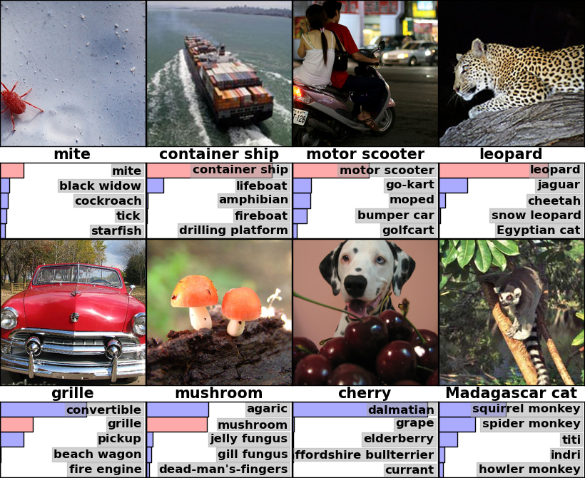 </center> ] --- # Image Classification ### Challenges 1. **High dimensionality** - Images are represented digitally as a matrix of **pixels** - If we use **RGB** to represent the colour of a pixel, a 300 x 300 image has 270,000 values 2. **Representation** - Representing an image using a feature vector of all the pixels is of little use - The scale and perspective of the object inside an image can vary a lot 3. **Noise** - A picture of an object usually have something in the background - An object may appear with another irrelevant object in the same image --- class: split # What is an Image .column-left[ * An image is represented digitally by **pixels** (picture elements) * Each pixel contains the values of the colour of the corresponding component of the image * Resolution refers to the **number of pixels** used to represent the image * The values of the pixels can represent the intensity of light, the RGB values, hue, saturation, brightness, etc. ] .column-right[ <center> <br/><br/> An image with 48 x 48 pixels with RGB channels </center> ] --- # What is an Image <center> <br/><br/> A grey scale version of the previous image<br/> Each pixel has a value between 0 and 255 </center> --- # What is an Image ### RGB (Red, Green, Blue) * One of the most commonly used colour model * Each pixel is represented by **three integer values**, each of **8 bits (0 to 255)** * This allows 16,777,216 (256<sup>3</sup>) combinations for a pixel <center> 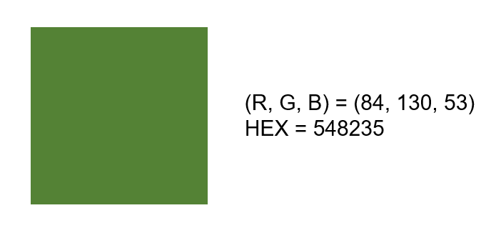 </center> --- # Image Classification ### Why is image classification difficult? * Semantics is **lost** in an image represented as a matrix of pixels * We need to bridge the **gap between pixels and meanings** * What are the **features** that can be used to represent an image? <center> 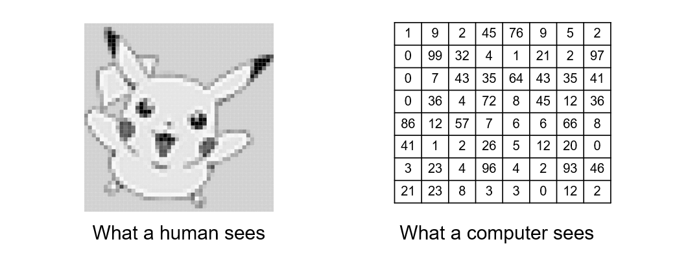 </center> --- # Representation and Feature Extraction * In order to perform computation on images, we need an **appropriate representation** of the images. * Some **representations** are: - Use the values of the **raw pixels** - Use **keywords (metadata)** to describe an image, and thus an image can be represented as a bag of words - Extract **visual features** from the image and use a vector of features to represent an image * Finding a **good representation** is hard! --- # Image Features * A **feature** is a piece of information relevant for solving a certain computational task * In **computer vision**, features can be pixels, points, edges, shapes, or other more complex **visual structures** * **Feature detection** – the process of identifying features in an image that is representative of the image itself * Ref: https://en.wikipedia.org/wiki/Feature_detection_(computer_vision) --- class: split # Feature Extraction .column-left[ <center> <br/> Edge Detection<br/> <a href="https://en.wikipedia.org/wiki/Edge_detection">https://en.wikipedia.org/wiki/Edge_detection</a> <br/><br/> 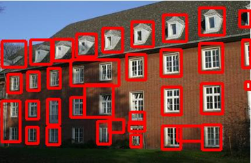<br/> Blob Detection<br/> <a href="http://www.ipb.uni-bonn.de/projects/etrims/results/blob-detection-Dateien">http://www.ipb.uni-bonn.de/projects/etrims/results/blob-detection-Dateien</a> </center> ] .column-right[ <center> <br/> Corner Detection<br/> <a href="https://dzone.com/articles/corner-detection-opencv">https://dzone.com/articles/corner-detection-opencv</a> </center> ] --- # SIFT * SIFT stands for **Scale-Invariant Feature Transform** * Published by **David Lowe** (now at Google) in 1999/2004 * An algorithm for detecting and describing **local features** in images * One of the most widely used feature extraction algorithm in computer vision * Able to detect features when the **scales** and **rotations** are different * Ref: [Distinctive Image Features from Scale-Invariant Keypoints](https://www.cs.ubc.ca/~lowe/papers/ijcv04.pdf) --- # SIFT ## Problem Definition * What are the criteria of **good features**? - Distinctive - Easy to extract - Invariant to noise, illumination ,scaling, rotation, viewing direction - Easy to match against a large database of features --- # SIFT * SIFT is an approach for detecting (determine what is a feature) and describing local features with the following steps: 1. Scale-space extrema detection 2. Keypoint localization 3. Orientation assignment 4. Generation of keypoint descriptors * Ref: [http://docs.opencv.org/trunk/da/df5/tutorial_py_sift_intro.html](http://docs.opencv.org/trunk/da/df5/tutorial_py_sift_intro.html ) --- class: split # SIFT .column-left[ * **1. Scale-space extrema detection** - Search for stable features across different scales - An image is rescaled and smoothed by a Gaussian (blurring) filter - Find out interesting points by selecting the local maxima or minima among different scales * **2. Keypoint localization** - Remove points with low contrasts or edges (not necessary interesting features) ] .column-right[ <center> 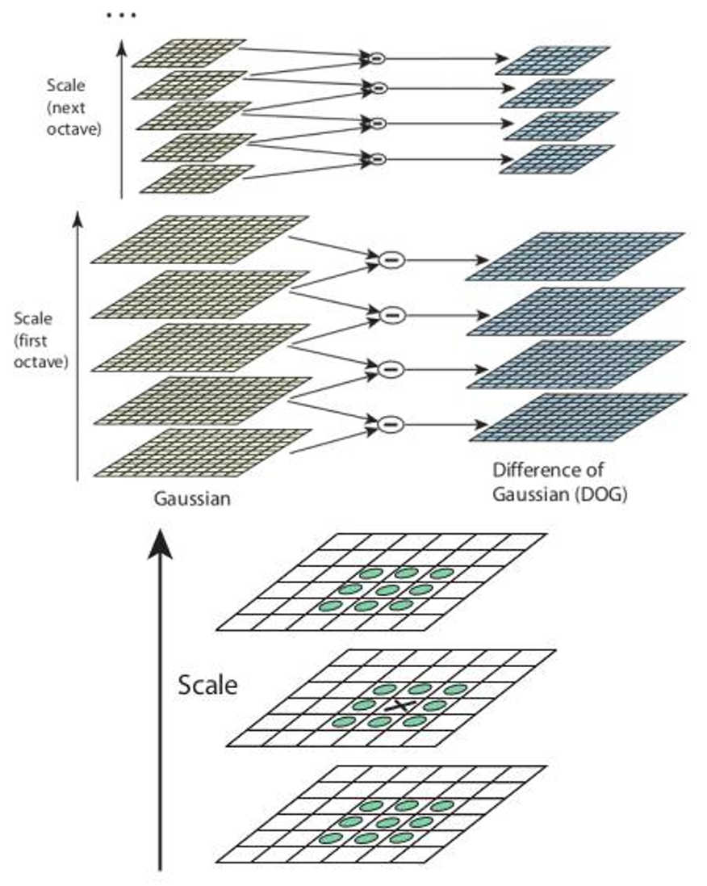 </center> ] --- # SIFT * **3. Orientation assignment** - Assign an orientation to each keypoint, so that the features detected are invariant to image rotation * **4. Generation of keypoint descriptors** - A **16x16** neighbourhood around the keypoint is taken, and a histogram of orientations of the gradients are calculated - Finally, each keypoint is represented by **a vector of length 128** <center> 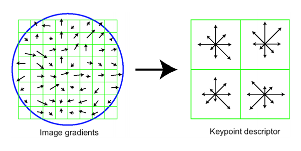 </center> --- class: split # SIFT in OpenCV .column-left[ ```python import cv2 import numpy as np img = cv2.imread('star-ferry.jpg') gray= cv2.cvtColor(img,cv2.COLOR_BGR2GRAY) sift = cv2.xfeatures2d.SIFT_create() kp = sift.detect(gray,None) flag = cv2.DRAW_MATCHES_FLAGS_DRAW_RICH_KEYPOINTS img = cv2.drawKeypoints(gray, kp, img, flags=flag) cv2.imwrite('keypoints.jpg', img) ``` ] .column-right[ <center> 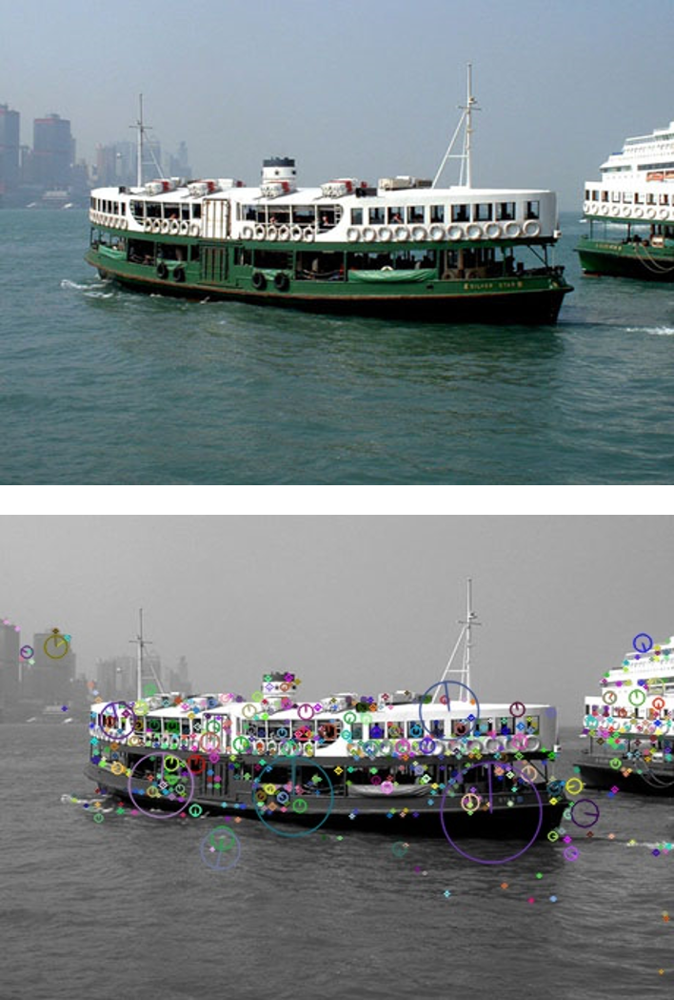 </center> ] --- # SIFT * Keypoints can be used to **match objects** across different images <center> 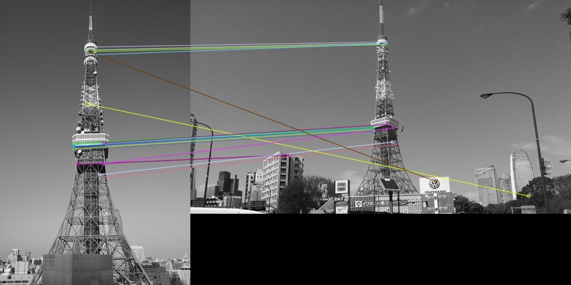 </center> --- # Visual Bag-of-Words * In text classification, a document can be represented by a **bag of words** * Similar approach can be used in image classification <center> 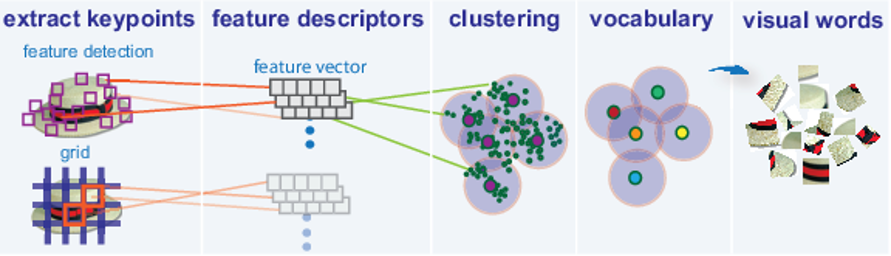 </center> * Ref: [http://www.mathworks.com/help/vision/ug/image-classification-with-bag-of-visual-words.html](http://www.mathworks.com/help/vision/ug/image-classification-with-bag-of-visual-words.html) --- # Visual Bag-of-Words ### Steps 1. Extract **keypoints** from images using SIFT 2. **Cluster** the keypoints to create a **visual dictionary** using a clustering algorithm (e.g. K-means) 3. For a given image, check the cluster to which each keypoint is in, and create a **histogram** of the distribution of clusters 4. Images are then represented by **vectors by normalizing the histograms** --- # Visual Bag-of-Words <center> 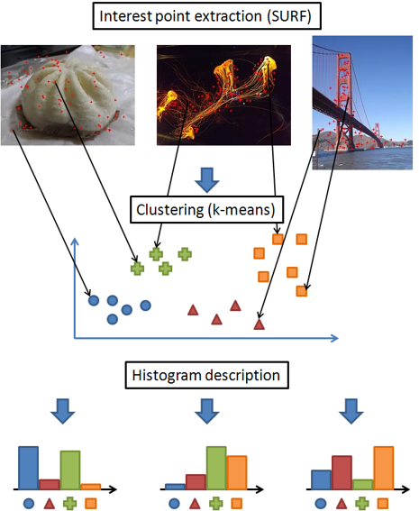 </center> * Ref: [http://www.olivier-augereau.com/blog/?p=358](http://www.olivier-augereau.com/blog/?p=358) --- # Limitations * SIFT aims at identifying interesting points automatically, but keypoints are still relatively **primitive** and are not usually good enough for **classification tasks** * The visual BoW approach does not consider **spatial relations** among visual words * SIFT cannot be easily adapted to **different domains** to extract distinct features, as it is not based on **machine learning** * SIFT is computationally expensive ### We need better algorithms to extract image features! --- class: center, middle # Deep Learning --- class: equal-split # Neural Networks (NN) / Artificial Neural Networks (ANN) .column-left[ * A computational model inspired by the biological neural networks in the human body * A model involving a set of **neurons** connected to one another in some specific ways * Can be used to model **non-linear** relations between inputs and outputs ] .column-right[ <br/> <center> 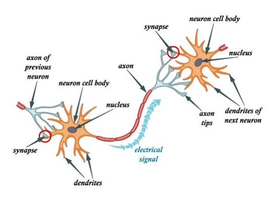 </center> ] --- # Basic Unit: Neurons * A **neuron** is the basic unit in a neural network (also called a **node**) * Each input is associated with a **weight** * A neuron applies a function `\(f\)` on the **weighted sum** of the inputs, and generates its **output** <br/><br/> <center> 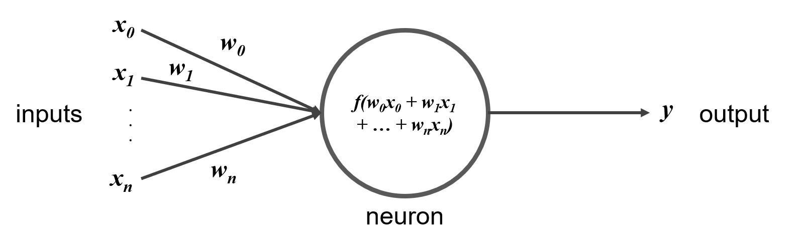 </center> --- # Activation Functions * `\(f\)` is called the **activation function** of the neuron * It is usually a **non-linear** function * Using non-linear activation functions allow neural networks to model **non-linear** relations <center> <img src="img/l7-non-linear-functions.png" width="90%"/> </center> <center> <br/> \(\text{sigmoid}(x) = \frac{1}{1 + e^{-x}}\) \(\text{tanh}(x) = \frac{1 - e^{-2x}}{1 + e^{-2x}} \) \(\text{ReLU}(x) = \text{max}(0, x)\) </center> --- class: center, middle ### TED Talk ### How We Teach Computers to Understand Pictures (Fei Fei Li) <center> <a href="https://www.youtube.com/watch?v=40riCqvRoMs">https://www.youtube.com/watch?v=40riCqvRoMs</a> </center> --- # Feed-forward Neural Networks * In a **feed-forward** neural network, computation is performed in a **single direction** * Neurons are arranged in one or more **layers** * Nodes are connected by **edges**, with **weights** associated with the edges <center> 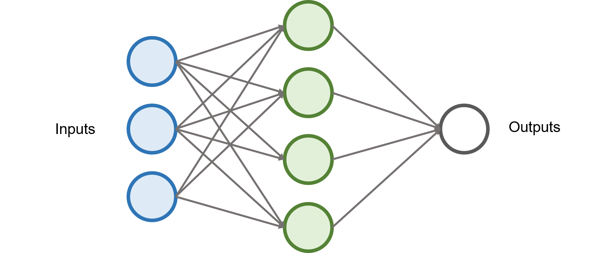 </center> --- class: equal-split # Feed-forward Neural Networks .column-left[ * A feed-forward neural network has **three different types of nodes**: - **Input Nodes** Pass inputs to the neural network, no computation is performed - **Hidden Nodes** Perform computations and transfer information from the previous layer to the next layer - **Output Nodes** Represents the output of the neural network ] .column-right[ <center> 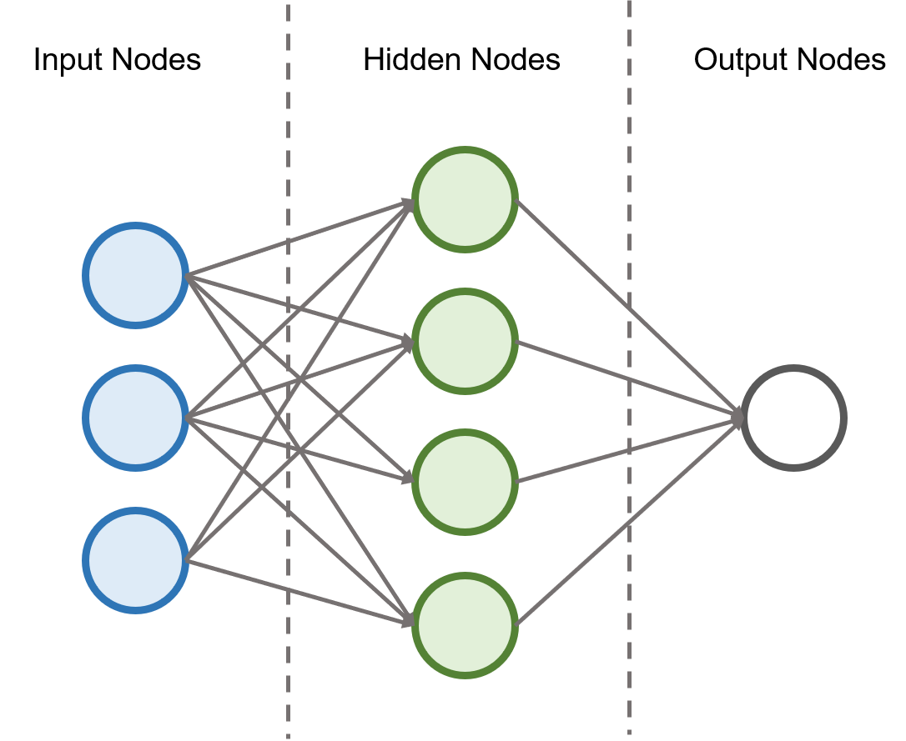 </center> ] --- class: equal-split # Multi-Layer Perceptron (MLP) .column-left[ * A neural network that is consist of **one or more** hidden layers are also called a **multi-layer perceptron (MLP)** * A multi-layer perceptron can be used to learn **non-linear functions** * Also called a **fully connected** neural network (each node in one layer is connected to all nodes in the next layer) ] .column-right[ <center> </center> ] --- # Loss Function in Neural Networks * A neural network can be easily designed to perform **multi-class classification** * This is by creating **N output nodes** in the output layer * A commonly used **loss function** in training neural networks for classification is the **logarithmic loss function** (Log Loss) * Ref: [http://scikit-learn.org/stable/modules/model_evaluation.html#log-loss](http://scikit-learn.org/stable/modules/model_evaluation.html#log-loss) $$ \text{logloss} = -\frac{1}{N} \sum\_{i=1}^N \sum\_{c=1}^C y\_{ic} \text{log}(p\_{ic}) $$ * `\(N\)` is number of training samples, `\(C\)` is the number of classes (labels) * `\(y_{ic} = 1\)` if sample `\(i\)` belongs to class `\(c\)`, otherwise it is 0 * `\(p_{ic}\)` is the **predicted probability** that sample `\(i\)` belongs to class `\(c\)` --- # Convolutional Neural Network * A neural network can be easily adopted to handle **images** * For example, we can **resize** our images to a fixed dimension, and each **pixel** (or each channel of each pixel) can be sent to an **input node** * However, we do not use simple fully connected neural networks for image classification - Does not really extract useful features from the image - Too many parameters (weights) to learn <br/> <center> 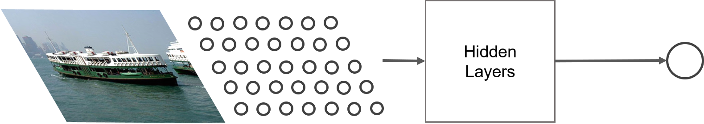 </center> --- # Convolutional Neural Network * We would like the neural network to **extract useful features** and then use those features for classification * What are **useful features**? * We can design a neural network that helps us to extract features that are useful for classification * Features should be - **Localized**: basic features (corners, points, etc.) are usually found in a small regions - **Hierarchical**: more **complex features** are usually composed of basic features --- # Convolutional Neural Network * Features can be extracted using **convolutional layers** * [Convolution](https://en.wikipedia.org/wiki/Convolution): modifying one function with another function * By applying convolution on images, we pick a small area of pixels, apply a function on the values, and computes an output <center> 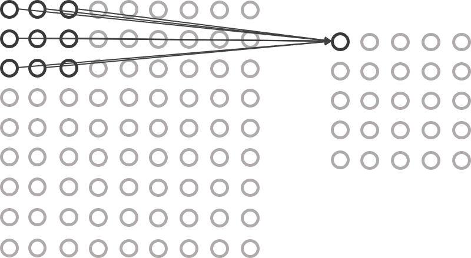 </center> --- # Convolutional Neural Network * The filter is responsible for extracting meainingful features from the raw image * Some common filters are shown below * However, in training a **convolutional neural network**, we learn the values in the filters from the data <center> 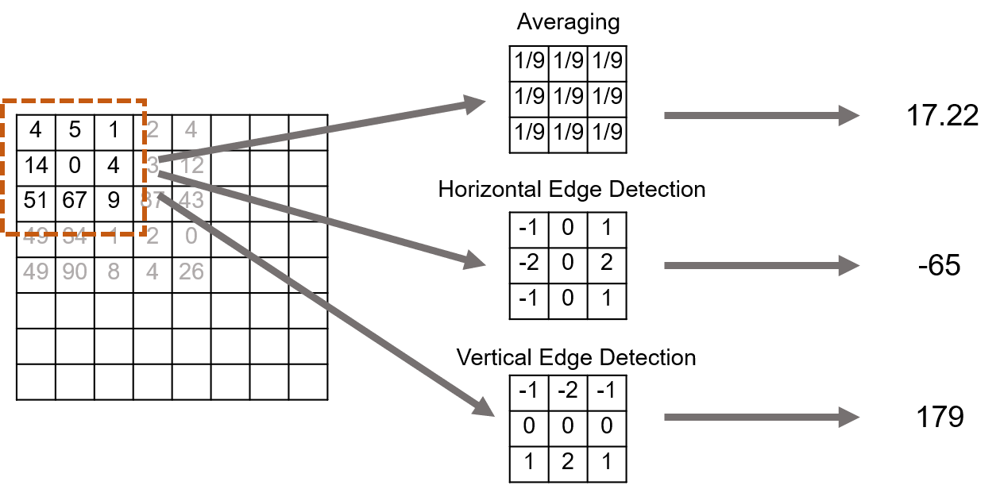 </center> --- # Convolutional Neural Network * In a convolutional neural network, we can have **multiple layers** of convolution operations, together with other **pooling** layers * After features are extracted, they are fed into some **fully connected layers**, which act as a classifier <center> <img src="img/l6-convolutional-neural-network.png" width="75%"/><br/> https://adeshpande3.github.io/A-Beginner%27s-Guide-To-Understanding-Convolutional-Neural-Networks/ </center> --- # AlexNet * Described in the paper [ImageNet Classification with Deep Convolutional Neural Networks](http://papers.nips.cc/paper/4824-imagenet-classification-with-deep-convolutional-neural-networks) (Krizhevsky et. al 2012) * One of the first work that attracted wide attention to applying CNN in computer vision * Achieved top-5 error rate of 18.9% <center> 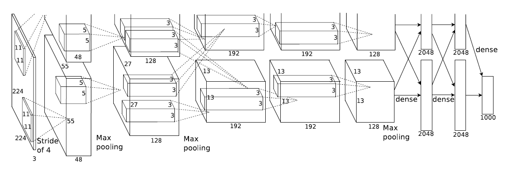 </center> --- # Inception * Described in the paper [Going Deeper with Convolutions](https://arxiv.org/abs/1409.4842) (Szegedy et al. 2014) * A new architecture of CNN by Google with many more layers * Achieved top-5 error rate of 6.67% <center> <img src="img/l6-inception.png" width="100%"/> </center> --- # ResNet * Described in the paper [Deep Residual Learning for Image Recognition](https://arxiv.org/abs/1512.03385) (He et al. 2015) * Introducing the idea of residual learning, allowing a neural network to have many more layers (152 layers) * Achieved top-5 error rate of 3.57% <center> 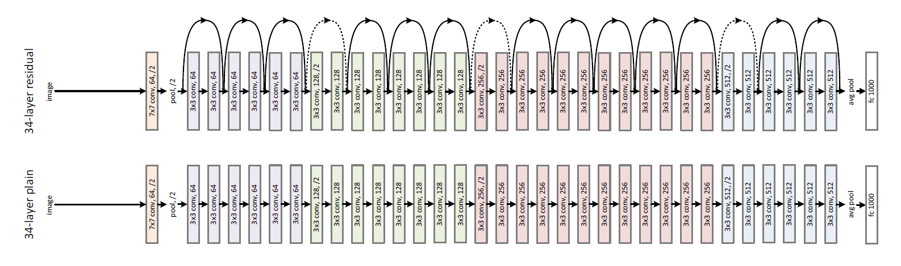 </center> --- # Commonly Used Deep Learning Frameworks * Many deep learning frameworks are available (especially in Python) * [Tensorflow](https://www.tensorflow.org/tutorials/) (by Google) * [PyTorch](https://pytorch.org/) (by Facebook) * [MXNet](https://mxnet.apache.org/) (adotped by AWS) * [Keras](https://keras.io/) (A high level API using Tensorflow or Theano as backend) * And many more, see [Comparison of Deep Learning Software](https://en.wikipedia.org/wiki/Comparison_of_deep_learning_software) <center> </center> --- # GPU vs. CPU * A deep neural network usually consists of a **huge number of parameters** - AlexNet: ~62,000,000 weights - GoogLeNet (Inception): ~6,9000,000 weights - ResNet 152: ~60,000,000 weights * A large number of parameters implies that we need **a lot of training data** in order to optimize their values * Deep learning is made possible by parallel computation on **graphical processing units (GPUs)** * See some comparison of the time required to train a deep learning model here: [https://dawn.cs.stanford.edu/benchmark/index.html](https://dawn.cs.stanford.edu/benchmark/index.html) * Most deep learning frameworks support model training on **multiple GPU cards** --- # Testing with Pre-trained Models * ResNet50 in Keras: [l6-example-keras-resnet50.ipynb](https://drive.google.com/open?id=1AwaKEG_vdpwhl_5C36CAGczfCTaWrGzp) * Inception V3 in PyTorch: [l6-example-pytorch-inceptionv3.ipynb](https://drive.google.com/open?id=1QjsSyG9c8JGhu-2w5koLClzB3dRND3To) --- class: center, middle # End of Lecture 6